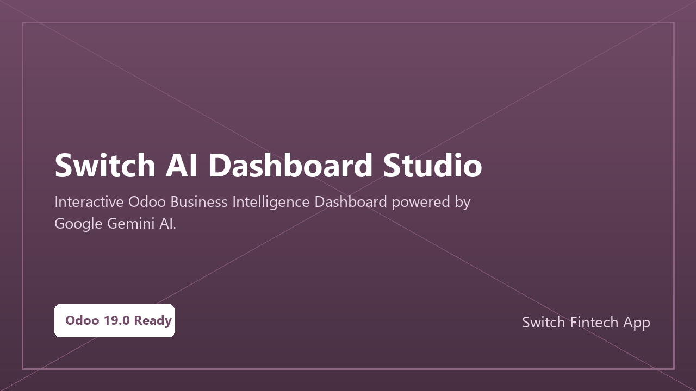

Interactive business intelligence dashboard powered by Google Gemini AI - ask questions about your data in plain language.
Charts, KPIs, and natural language queries - all in one dashboard.
Access the AI Dashboard from the main Odoo menu.
See real-time key performance indicators from your Odoo data.
Type a business question and Gemini AI analyzes your data to answer it.
Interactive charts and graphs update based on your filters and queries.
Instead of building complex reports, just ask: 'What were my top 5 customers last month?' or 'Show me overdue invoices by salesperson' - and Gemini AI answers with charts and data.
| Feature | What it provides |
|---|---|
| Natural Language Queries | Ask business questions in plain English or Arabic. |
| AI-Generated Charts | Automatic chart generation based on your queries. |
| Real-time KPIs | Live key performance indicators from your Odoo data. |
| Google Gemini AI | Powered by Google's latest Gemini AI model. |
| Interactive Filters | Filter dashboard data by date, company, and department. |
Stop building reports - just ask your data.